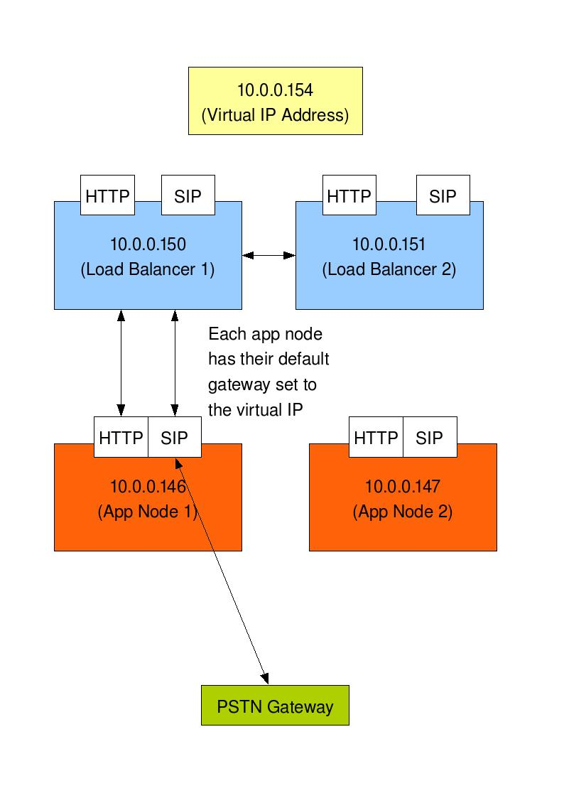

/etc/sysctl.conf and add the following options to the file:
# Enables packet forwarding
net.ipv4.ip_forward = 1
# Stops stickiness being an issue
net.ipv4.vs.expire_nodest_conn = 1
Running the following command will boot strap these options:
/sbin/sysctl -p
We'll also want to make sure this is run when booting up the OS, so edit /etc/init.d/boot.local and add the '/sbin/sysctl -p' command to the bottom of the file. This will ensure this state is restored after a restart.
/etc/ha.d/ldirectord.cf
# timeout for real server response. if expired the server is considered not available
checktimeout=1
# how often to check the real server for availability
checkinterval=1
# set to 'yes' will reload cf file after change
autoreload=yes
# where to log files (only if started in non deamon mode)
logfile="/var/log/ldirectord.log"
# set to yes to set the virtual server weight to 0 for non available servers
# (as opposite to deleting them from the lvs virtual table) - see man
# for side effect on client connection persistency
quiescent=no
# http virtual service
virtual=10.0.0.150:9072
# first real server ip address, port, forwarding mecahnism, weight. masq -> NAT
real=10.0.0.147:9072 masq 1
# second real server ip address, port, forwarding mecahnism, weight. masq -> NAT
real=10.0.0.146:9072 masq 1
# type of service
service=http
# where to send http request for checking availability
request="/SpringRing/status"
# what to match on the response to verify the server to be available
receive="Sample SpringRing web application"
# type of scheduling - rr: round robin
scheduler=rr
# type of protocol for this service
protocol=tcp
# type of check: negotiate means send request and verify response (see man for others)
checktype=negotiate
# udp/sip virtual service
virtual=10.0.0.150:7072
# first real server ip address, port, forwarding mecahnism, weight. masq -> NAT
real=10.0.0.147:7072 masq 1
# second real server ip address, port, forwarding mecahnism, weight. masq -> NAT
real=10.0.0.146:7072 masq 1
# type of service
service=sip
# type of shceduling
scheduler=rr
# type of protocol
protocol=udp
# type of check
checktype=negotiate
# client connection pesistency timeout
persistent=1
/etc/init.d/ldirectord start
Now any requests sent to the load balancer will be forwarded, round robin, to the application nodes. The status messages happen automatically and any removal of an application node will change the routing table which can be viewed by the following command:
ipvsadm -L -n
IP Virtual Server version 1.2.1 (size=4096)
Prot LocalAddress:Port Scheduler Flags
-> RemoteAddress:Port Forward Weight ActiveConn InActConn
UDP 10.0.0.150:7072 rr persistent 1
-> 10.0.0.147:7072 Masq 1 0 0
-> 10.0.0.146:7072 Masq 1 0 0
TCP 10.0.0.150:9072 rr
-> 10.0.0.147:9072 Masq 1 0 0
-> 10.0.0.146:9072 Masq 1 0 0
# On the master linux-director
/etc/ha.d/resource.d/LVSSyncDaemonSwap master status
master running
# On the stand-by linux-director
/etc/ha.d/resource.d/LVSSyncDaemonSwap master status
master stopped
# What interfaces to broadcast heartbeats over?
mcast eth0 225.0.0.1 694 1 0
# auto_failback: determines whether a resource will
# automatically fail back to its "primary" node, or remain
# on whatever node is serving it until that node fails, or
# an administrator intervenes.
auto_failback off
# Tell what machines are in the cluster
# node nodename ... -- must match uname -n
node AppNode1
node AppNode2
/etc/ha.d/haresources looks like this:
AppNode1 \
LVSSyncDaemonSwap::master \
ldirectord::ldirectord.cf \
IPaddr2::10.0.0.154/25/eth0
/etc/ha.d/haresouces file is identical on each load balancer. This identifies the master load balancer, but you can see in our /etc/ha.d/ha.cf file we have configured auto failback to false. This ensures when the master load balancer goes down, it will not re-take the master status unless over ridden by an administrator. You would most likely want this behaviour so any investigations could be carried out to the failure.
We also use the example /etc/ha.d/authkeys file from the Ultra Monkey site. The authkeys file will also need to be protected, and this can be achieved through the following command:
chmod 600 /etc/ha.d/authkeys
We now also have to change the ldirectord config to point to the virtual IP address mentioned in the ha.cf configuration. Change the virtual IP address line to reflect the change.

/etc/init.d/ldirectord stop
/etc/init.d/heartbeat start
After a few moments you can run the "who's the master?" command to see which load balancer is active.
/etc/ha.d/resource.d/LVSSyncDaemonSwap master status
The load balancer will also have started ldirectord, which you can see if you use the following commands:
ps -ef|grep ldirectord
The above to see the process running and the below to see what routes the load balancer is currently letting through.
/sbin/ipvsadm -L -n
This command will display what protocols and servers packets are being forwarded too. In our example here you will see two TCP and two UDP connections, one each to each application node.
If you now 'take down' an application node, you will that the master load balancer will update it's packet forwarding table, again you can see this by using the following command.
/sbin/ipvsadm -L -n
Failover of high availability can also be simulated by stopping heartbeat on the master load balancer.
/etc/init.d/heartbeat stop
This will result in the secondary load balancer taking ownership of the virtual IP address. This can be monitored through the following command:
ip addr sh